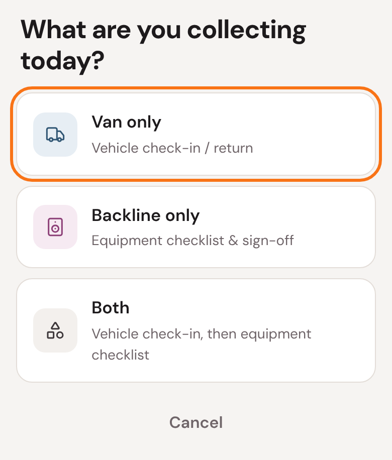
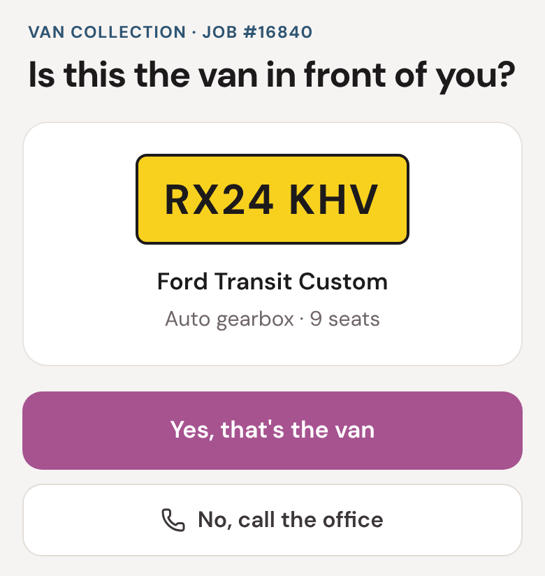
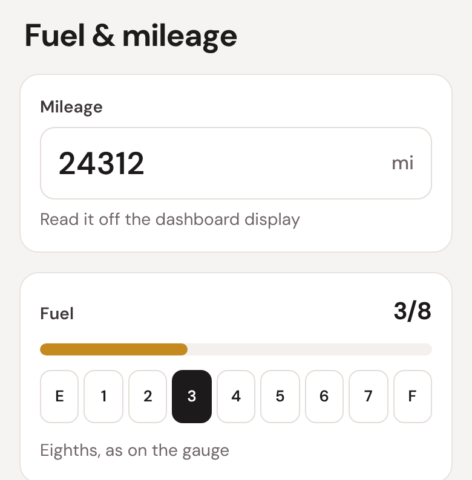
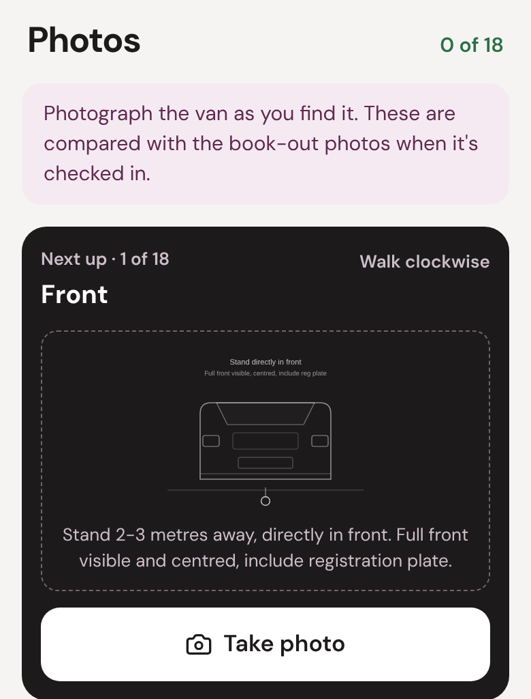
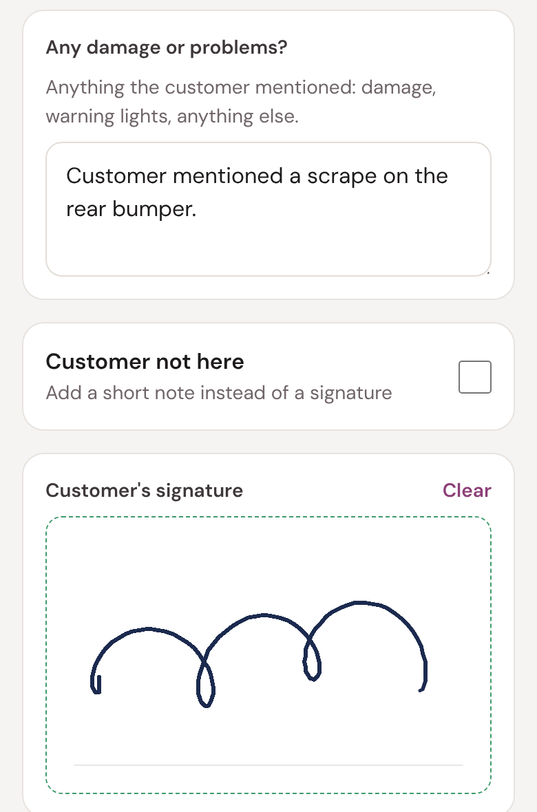
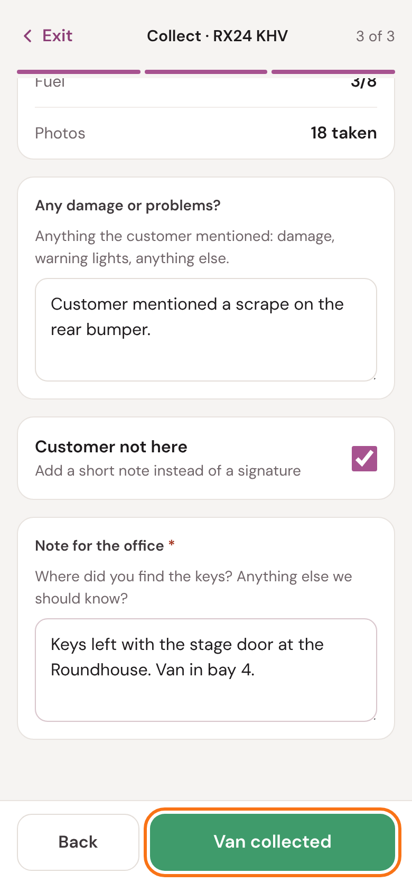
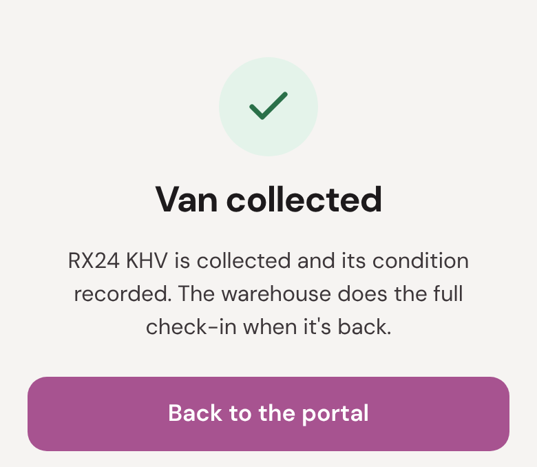
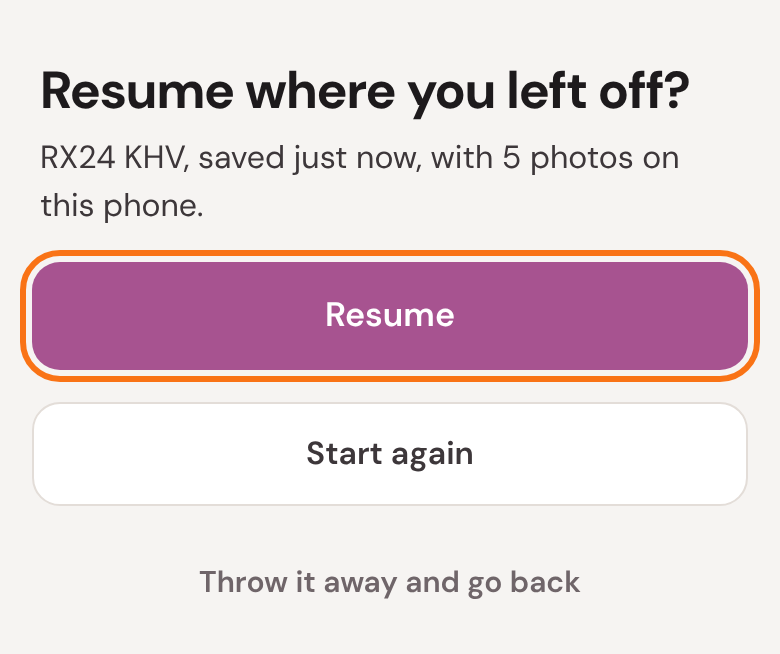

Collecting a hire van
Picking a van up from a customer
When you collect an Ooosh hire van, you record how you found it: the mileage, the fuel, and photos all round, plus anything the customer tells you. They sign, or if nobody's there, you leave a note.
The warehouse does the full check-in when the van is back. Your photos are what they compare with how it went out.
Five things to remember
- Check the number plate before you start.
- Read the mileage and fuel before you drive it anywhere.
- Take all 18 photos as you find the van, before you move it.
- Ask the customer about damage or warning lights, and write it down.
- Customer not there? Say where you found the keys.
1
Start the collection
When you get there, open the job in the portal and tap Start collection at the bottom.
Tap Van only. If you're collecting backline as well, tap Both: you'll do the van first, then the equipment checklist.

2
Is this the van?
Check the plate on the van in front of you against the screen.

- It matches: tap Yes, that's the van.
- It doesn't, or you can't find the van: tap No, call the office.
More than one van on the job? It asks which one you're collecting first. Tap the one whose plate matches.
3
Fuel and mileage
Before you drive it anywhere, type the mileage off the dashboard and tap the fuel level, in eighths, as on the gauge.

A red line means the mileage is lower than when it went out. Check the dashboard again: it can't be lower.
4
The 18 photos
Photograph the van as you find it. Start at the front and walk clockwise round it. The card says which photo is next and how to frame it.

- Get the whole panel in, square on.
- Tap any photo to retake it.
- Damage? Tap Add an extra photo, take it close up, and say what it shows.
5
Notes and signature
Ask the customer if anything happened: damage, warning lights, anything else. Write it under Any damage or problems?

Then hand the phone to the customer to sign.
Less fuel than when it went out? It says so. That's for the office to sort with the customer: just carry on.
6
If the customer isn't there
Tick Customer not here and write a note instead: where you found the keys, where the van was, and anything else we should know.

Tap Van collected. Stay where you have signal until it's done: it's sending the photos.
7
Done

We email the customer a collection report. The warehouse does the full check-in when the van is back.
- Van only: tap Back to the portal, then All done to finish the job.
- Both: carry on with the equipment checklist, as in the backline guide.
See Collected, with something to check? The van is collected, but one step didn't finish. Read the list and call the office.
8
If you stop part-way
The collection saves on your phone as you go, photos and all. If you leave it, or your phone closes the page, open the job and tap Start collection again. It asks straight away:

Tap Resume to carry on where you left off. Start again clears it and starts from the beginning.
?
If something's not right
- It's the wrong van, or I can't find it.
- Tap No, call the office.
- It says there's no van on this job.
- Go back and pick what you're really collecting. Not sure? Call the office.
- The mileage won't save.
- It's lower than when it went out. Check the dashboard again, then call the office if it's right.
- There's no signal.
- Keep going: it saves on your phone. Tap Van collected when you have signal again.
- The customer has left before signing.
- Tick Customer not here and leave a note.
- I closed it by mistake.
- Open the job, tap Start collection, and then Resume.
The office: 01273 911382 · info@oooshtours.co.uk